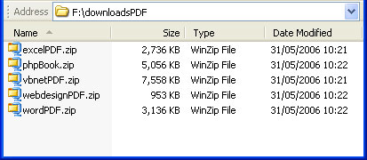

Free
computer Tutorials
|
Free
computer Tutorials
|
|
 home home |
Stay at Home and Learn | ||||
Customize Your Folder Views in Windows XP
As well as the folder options from the dialogue box, you can do a certain amount of customization of you folders. Here's how.
Change how the Files are displayedIn the image below, the files in the folder are displayed as Tiles:
To change how the files are displayed, either click the View menu at the top, or click the Views icon in the toolbar: The black dot shows you which View is currently selected. The five different Views in XP are Thumbnails, Tiles, Icons, List,
and Details. When you click Thumbnails, you'll see your files
set out like this: When you click Icons, you'll see your files set out like this: When you click List, you'll see your files set out like this: When you click Details, you'll see your files set out like this:  The only two views where file information is directly displayed are Tiles and Details. Otherwise, you have to move your mouse over a file to get more information. If you need to see how big a file is (if you're emailing an image, for example, then select Tiles or Details. If you want to add more details than the ones above, click View from the menu bar. From the View menu, click Choose Details. You'll then see a dialogue box that allows you to select the items you want in Details view. In the image above, only Size, Type and Date Modified are shown. But you can add details like Date Created, Owner, Author, Title, and a whole lot more.
<--Back One Page Move on to the Next Part--> |
|||||
|